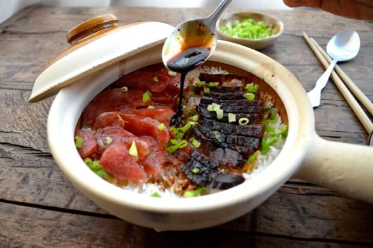

Clay Pot Rice
Reference:
source

Description:
The Rice Bowl To End All Rice Bowls.
Ingredients:
- 1 cup long grain rice
- 1 cup water
- 3-inch piece of cured pork belly
- 1-2 links of sweet Chinese sausage
- 1 tablespoon regular soy sauce
- 1 tablespoon seasoned soy sauce
- ½ tablespoon dark soy sauce
- 1 tablespoon fish sauce
- 1/8 teaspoon sugar
- 1/8 teaspoon white pepper
- 1 scallion (chopped)
Steps:
-
Soak your cup of rice in (exactly) a cup of water in your clay pot for an hour. After it's been soaked, put the pot over medium heat and bring it to a boil. When it's boiling, put the cured meats on top of the rice (don't stir). Cover the pot, turn the heat down to the lowest setting, and let it simmer for about 10 minutes.
-
In a small bowl, mix together the soy sauces, fish sauce, sugar, and white pepper. Uncover the pot, and pour the sauce evenly over the rice evenly. Cover it back up and simmer for another 3 minutes.
-
After that, uncover the pot, slice up the meats, and add them back to the pot along with your chopped scallion. Stir everything together. You can also add more soy sauce, to taste!
-
You can also make this dish in a rice cooker. Just add the rice, water, and meat to the rice cooker and cook normally. When the rice is done, take the meat out and slice it. Add it back to the rice along with the sauce and the scallions!